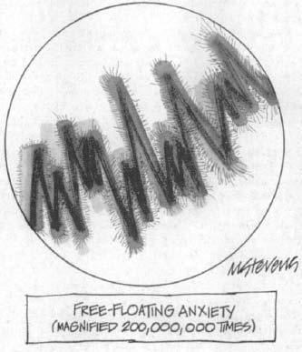
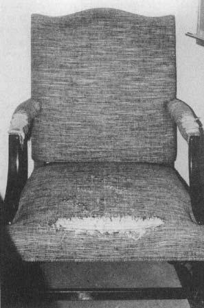
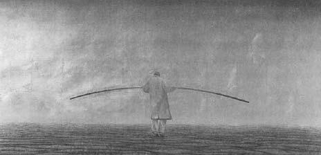

The main point of chapter 13 was that psychological factors can modulate stress-responses. Perceive yourself in a given situation to have expressive outlets, control, and predictive information, for example, and you are less likely to have a stress-response. What this chapter explores is the fact that people habitually differ in how they modulate their stress-responses with psychological variables. Your style, your temperament, your personality have much to do with whether you regularly perceive opportunities for control or safety signals when they are there, whether you consistently interpret ambiguous circumstances as implying good news or bad, whether you typically seek out and take advantage of social support. Some folks are good at modulating stress in these ways, and others are terrible. These fall within the larger category of what Richard Davidson has called “affective style.” And this turns out to be a very important factor in understanding why some people are more prone toward stress-related diseases than others.
The main point of chapter 13 was that psychological factors can modulate stress-responses. Perceive yourself in a given situation to have expressive outlets, control, and predictive information, for example, and you are less likely to have a stress-response. What this chapter explores is the fact that people habitually differ in how they modulate their stress-responses with psychological variables. Your style, your temperament, your personality have much to do with whether you regularly perceive opportunities for control or safety signals when they are there, whether you consistently interpret ambiguous circumstances as implying good news or bad, whether you typically seek out and take advantage of social support. Some folks are good at modulating stress in these ways, and others are terrible. These fall within the larger category of what Richard Davidson has called “affective style.” And this turns out to be a very important factor in understanding why some people are more prone toward stress-related diseases than others.
We start with a study in contrasts. Consider Gary. In the prime of his life, he is, by most estimates, a success. He’s done okay for himself materially, and he’s never come close to going hungry. He’s also had more than his share of sexual partners. And he has done extremely well in the hierarchical world that dominates most of his waking hours. He’s good at what he does, and what he does is compete—he’s already Number 2 and breathing down the neck of Number 1, who’s grown complacent and a bit slack. Things are good and likely to get better.
But you wouldn’t call Gary satisfied. In fact, he never really has been. Everything is a battle to him. The mere appearance of a rival rockets him into a tensely agitated state, and he views every interaction with a potential competitor as an in-your-face personal provocation. He views virtually every interaction with a distrustful vigilance. Not surprisingly, Gary has no friends to speak of. His subordinates give him a wide, fearful berth because of his tendency to take any frustration out on them. He behaves the same toward Kathleen, and barely knows their daughter Caitland—this is the sort of guy who is completely indifferent to the cutest of infants. And when he looks at all he’s accomplished, all he can think of is that he is still not Number 1.
Gary’s profile comes with some physiological correlates. Elevated basal glucocorticoid levels—a constant low-grade stress-response because life is one big stressor for him. An immune system that you wouldn’t wish on your worst enemy. Elevated resting blood pressure, an unhealthy ratio of “good” to “bad” cholesterol, and already the early stages of serious atherosclerosis. And, looking ahead a bit, a premature death in late middle-age.
Contrast that with Kenneth. He’s also prime-aged and Number 2 in his world, but he got there through a different route, one reflecting the different approach to life that he’s had ever since he was a kid. Someone caustic or jaded might dismiss him as merely being a politician, but he’s basically a good guy—works well with others, comes to their aid, and they in turn to his. Consensus builder, team player, and if he’s ever frustrated about anything, and it isn’t all that certain he ever is, he certainly doesn’t take it out on those around him.
A few years ago, Kenneth was poised for a move to the Number 1 spot, but he did something extraordinary—he walked away from it all. Times were good enough that he wasn’t going to starve, and he had reached the realization that there were things in life more important than fighting your way up the hierarchy. So he’s spending time with his kids, Sam and Allan, making sure they grow up safe and healthy. He has a best friend in their mother, Barbara, and never gives a thought to what he’s turned his back on.
Not surprisingly, Kenneth has a physiological profile quite different from Gary’s, basically the opposite on every stress-related measure, and enjoys a robust good health. He is destined to live to a ripe old age, surrounded by kids, grandkids, and Barbara.
Normally, with these sorts of profiles, you try to protect the privacy of the individuals involved, but I’m going to violate that by including pictures of Gary and Kenneth on the next page. Check them out.
Isn’t that something? Some baboons are driven sharks, avoid ulcers by giving them, see the world as full of water holes that are half empty. And some baboons are the opposite in every way. Talk to any pet owner, and they will give ardent testimonials as to the indelible personality of their parakeet, turtle, or bunny. And they’d usually be at least somewhat right—people have published papers on animal personality. Some have concerned lab rats. Some rats have an aggressive proactive style for dealing with stressors—put a new object in their cage and they bury it in the bedding. These animals don’t have much in the way of a glucocorticoid stress response. In contrast, there are reactive animals who respond to a menacing by avoiding it. They have a more marked glucocorticoid stress-response. And then there are studies about stress-related personality differences in geese. There’s even been a great study published about sunfish personalities (some of whom are shy, and some of whom are outgoing social butterflies). Animals are strongly individualistic, and when it comes to primates, there are astonishing differences in their personalities, temperaments, and coping styles. These differences carry some distinctive physiological consequences and disease risks related to stress. This is not the study of what external stressors have to do with health. This is, instead, the study of the impact on health of how an individual perceives, responds to, and copes with those external stressors. The lessons learned from some of these animals can be strikingly relevant to humans.
“Gary.”
“Kenneth” (with infant.)
Stress and the Successful Primate
If you are interested in understanding the stressors in our everyday lives and how some folks cope with them better than others, study a troop of baboons in the Serengeti—big, smart, long-lived, highly social animals who live in groups of from 50 to 150. The Serengeti is a great place for them to live, offering minimal problems with predators, low infant-mortality rates, easy access to food. Baboons there work perhaps four hours a day, foraging through the fields and trees for fruits, tubers, and edible grasses. This has a critical implication for me, which has made them the perfect study subjects when I’ve snuck away from my laboratory to the Serengeti during the summers of the past two decades. If baboons are spending only four hours a day filling their stomachs, that leaves them with eight hours a day of sunlight to be vile to one another. Social competition, coalitions forming to gang up on other animals, big males in bad moods beating up on someone smaller, snide gestures behind someone’s back—just like us.
I am not being facetious. Think about some of the themes of the first chapter—how few of us are getting our ulcers because we have to walk ten miles a day looking for grubs to eat, how few of us become hypertensive because we are about to punch it out with someone over the last gulp from the water hole. We are ecologically buffered and privileged enough to be stressed mainly over social and psychological matters. Because the ecosystem of the Serengeti is so ideal for savanna baboons, they have the same luxury to make each other sick with social and psychological stressors. Of course, like ours, theirs is a world filled with affiliation, friendships, relatives who support each other; but it is a viciously competitive society as well. If a baboon in the Serengeti is miserable, it is almost always because another baboon has worked hard and long to bring about that state. Individual styles of coping with the social stress appear to be critical. Thus, one of the things I set out to test was whether such styles predicted differences in stress-related physiology and disease. I watched the baboons, collected detailed behavioral data, and then would anesthetize the animals under controlled conditions, using a blowgun. Once they were unconscious, I could measure their glucocorticoid levels, their ability to make antibodies, their cholesterol profiles, and so on, under basal conditions and a range of stressed conditions.*
The cases of Gary and Kenneth already give us a sense of how different male baboons can be. Two males of similar ranks may differ dramatically as to how readily they form coalitional partnerships with other males, how much they like to groom females, whether they play with kids, whether they sulk after losing a fight or go beat up on someone smaller. Two students, Justina Ray and Charles Virgin, and I analyzed years of behavioral data to try to formalize different elements of style and personality among these animals. We found some fascinating correlations between personality styles and physiology.
Among males who were in the higher-ranking half of the hierarchy, we observed a cluster of behavioral traits associated with low resting glucocorticoid levels independent of their specific ranks. Some of these traits were related to how males competed with one another. The first trait was whether a male could tell the difference between a threatening and a neutral interaction with a rival. How does one spot this in a baboon? Look at a particular male and two different scenarios. First scenario: along comes his worst rival, sits down next to him, and makes a threatening gesture. What does our male subject do next? Alternative scenario: our guy is sitting there, his worst rival comes along and…wanders off to the next field to fall asleep. What does our guy do in this situation?
Some males can tell the difference between these situations. Threatened from a foot away, they get agitated, vigilant, prepared; when they instead see their rival is taking a nap, they keep doing whatever they were doing. They can tell that one situation is bad news, the other is meaningless. But some males get agitated even when their rival is taking a nap across the field—the sort of situation that happens five times a day. If a male baboon can’t tell the difference between the two situations, on the average his resting glucocorticoid levels are twice as high as those of the guy who can tell the difference—after correcting for rank as a variable. If a rival napping across the field throws a male into turmoil, the latter’s going to be in a constant state of stress. No wonder his glucocorticoid levels are elevated. These stressed baboons are similar to the hyperreactive macaque monkeys that Jay Kaplan has studied. As you will recall from chapter 3, these are individuals who respond to every social provocation with an overactivation of their stress-response (the sympathetic nervous system) and carry the greater cardiovascular risk.
Next variable: if the situation really is threatening (the rival’s a foot away and making menacing moves), does our male sit there passively and wait for the fight, or does he take control of the situation and strike first? Males who sit there passively, abdicating control, have much higher glucocorticoid levels than the take-charge types, after rank is eliminated as a factor in the analysis. We see the same pattern in low-ranking as well as high-ranking males.
A third variable: after a fight, can the baboon tell whether he won or lost? Some guys are great at it; they win a fight, and they groom their best friend. They lose a fight, and they beat up someone smaller. Other baboons react the same way regardless of outcome; they can’t tell if life is improving or worsening. The baboon who can’t tell the difference between winning and losing has much higher glucocorticoid levels, on average, than the guys who can, independent of rank.
Final variable: if a male has lost a fight, what does he do next? Does he sulk by himself, groom someone, or beat someone up? Discouragingly, it turns out that the males who are most likely to go beat on someone—thus displaying displaced aggression—have lower glucocorticoid levels, again after rank is eliminated as a variable. This is true for both subordinate baboons and the high-ranking ones.
Thus, after factoring out rank, lower basal glucocorticoid levels are found in males who are best at telling the difference between threatening and neutral interactions; who take the initiative if the situation clearly is threatening; who are best at telling whether they won or lost; and, in the latter case, who are most likely to make someone else pay for the defeat. This echoes some of the themes from the chapter on psychological stress. The males who were coping best (at least by this endocrine measure) had high degrees of social control (initiating the fights), predictability (they can accurately assess whether a situation is threatening, whether an outcome is good news), and outlets for frustration (a tendency to give rather than get ulcers). Remarkably, this style is stable over the years of these individuals’ lives, and carries a big payoff—males with this cluster of low-glucocorticoid traits remain high ranking significantly longer than average.
Our subsequent studies have shown another set of traits that also predict low basal glucocorticoid levels. These traits have nothing to do with how males compete with one another. Instead, they are related to patterns of social affiliation. Males who spent the most time grooming females not in heat (not of immediate sexual interest—just good old platonic friends), who are groomed by them the most frequently, who spend the most time playing with the young—these are the low-glucocorticoid guys. Put most basically (and not at all anthropomorphically), these are male baboons who are most capable of developing friendships. This finding is remarkably similar to those discussed in previous chapters regarding the protective effects of social affiliation against stress-related disease in humans. And as will be discussed in the final chapter of this book, this cluster of personality traits is also stable over time and comes with a distinctive payoff as well—a male baboon’s equivalent of a successful old age.
Thus, among some male baboons, there are at least two routes for winding up with elevated basal glucocorticoid levels, independent of social rank—an inability to keep competition in perspective and social isolation. Stephen Suomi at the National Institutes of Health has studied rhesus monkeys and identified another personality style that should seem familiar, which carries some physiological correlates. About 20 percent of rhesus are what he calls “high-reactors.” Just like the baboons who find a rival napping to be an arousing threat, these individual monkeys see challenges everywhere. But in their case, the response to the perceived threat is a shrinking timidity. Put them into a novel environment that other rhesus monkeys would find to be a stimulating place to explore, and they react with fear, pouring out glucocorticoids. Place them with new peers, and they freeze with anxiety—shy and withdrawn, and again releasing vast amounts of glucocorticoids. Separate them from a loved one, and they are atypically likely to collapse into a depression, complete with excessive glucocorticoids, overactivation of the sympathetic nervous system, and immunosuppression. These appear to be lifelong styles of dealing with the world, beginning early in infancy.
From where do these various primate personalities arise? When it comes to the baboons, I’ll never know. Male baboons change troops at puberty, often moving dozens of miles before finding an adult troop to join. It is virtually impossible to track the same individuals from birth to adulthood, so I have no idea what their childhoods were like, whether their mothers were permissive or stern, whether they were forced to take piano lessons, and so on. But Suomi has done elegant work that indicates both genetic and environmental components to these personality differences. For example, he has shown that an infant monkey has a significant chance of sharing a personality trait with its father, despite the formation of social groups in which the father is not present—a sure hint at a heritable, genetic component. In contrast, the high-reactivity personality in these monkeys can be completely prevented by fostering such animals early in life to atypically nurturing mothers—a powerful vote for environmental factors built around mothering style.
Broadly, these various studies suggest two ways that a primate’s personality style might lead down the path to stress-related disease. In the first way, there’s a mismatch between the magnitude of the stressors they are confronted with and the magnitude of their stress-response—the most neutral of circumstances is perceived as a threat, demanding either a hostile, confrontational response (as with some of my baboons and Kaplan’s macaques) or an anxious withdrawal (as with some of Suomi’s monkeys). At the most extreme they even react to a situation that most certainly does not constitute a stressor (for example, winning a fight) the same way as if it were a stressful misery (losing one). In their second style of dysfunction, the animal does not take advantage of the coping responses that might make a stressor more manageable—they don’t grab the minimal control available in a tough situation, they don’t make use of effective outlets when the going gets tough, and they lack social support.
It would seem relatively straightforward to pull together some sound psychotherapeutic advice for these unhappy beasts. But in reality, it’s hopeless. Baboons and macaques get distracted during therapy sessions, habitually pulling books off the shelves, for example; they don’t know the days of the week and thus constantly miss appointments; they eat the plants in the waiting room, and so on. Thus, it might be more useful to apply those same insights to making sense of some humans who are prone toward an overactive stress-response and increased risk of stress-related disease.
The Human Realm: A Cautionary Note
There are, by now, some fairly impressive and convincing studies linking human personality types with stress-related diseases. Probably the best place to start, however, is with a bit of caution about some reported links that, I suspect, should be taken with a grain of salt.
I’ve already noted some skepticism about early psychoanalytic theorizing that linked certain personality types with colitis (see chapter 5). Another example concerns miscarriages and abortions. Chapter 7 reviewed the mechanisms by which stress can cause the loss of a pregnancy, and one hardly needs to have experienced that personally to have an inkling of the trauma involved. Thus, you can imagine the particular agony for women who miscarry repeatedly, and the special state of misery for those who never get a medical explanation for the problem—no expert has a clue what’s wrong. Into that breach have charged people who have attempted to uncover personality traits common to women labeled as “psychogenic aborters.”
Some researchers have identified one subgroup of women with repeated “psychogenic” abortions (accounting for about half the cases) as being “retarded in their psychological development.” They are characterized as emotionally immature women, highly dependent on their husbands, who on some unconscious level view the impending arrival of the child as a threat to their own childlike relationship with their spouse. Another personality type identified, at the opposite extreme, are women who are characterized as being assertive and independent, who really don’t want to have a child. Thus, a common theme in the two supposed profiles is an unconscious desire not to have the child—either because of competition for the spouse’s attention or because of reluctance to cramp their independent lifestyles.
Many experts are skeptical about the studies behind these characterizations, however. The first reason harks back to a caveat I aired early in the book: a diagnosis of “psychogenic” anything (impotency, amenorrhea, abortion, and so on) is usually a diagnosis by exclusion. In other words, the physician can’t find any disease or organic cause, and until one is discovered, the disorder gets tossed into the psychogenic bucket. This may mean that, legitimately, it is heavily explained by psychological variables, or it may simply mean that the relevant hormone, neurotransmitter, or genetic abnormality has not yet been discovered. Once it is discovered, the psychogenic disease is magically transformed into an organic problem—“Oh, it wasn’t your personality after all.” The area of repeated aborting seems to be one that is rife with recent biological insights—in other words, if so many of last decade’s psychogenic aborters now have an organic explanation for their malady, that trend is likely to continue. So be skeptical of any current “psychogenic” label.
Another difficulty is that these studies are all retrospective in design: the researchers examine the personalities of women after they have had repeated abortions. A study may thus cite the case of a woman who has had three miscarriages in a row, noting that she is emotionally withdrawn and dependent on her husband. But because of the nature of the research design, one can’t tell whether these traits are a cause of the miscarriages or a response to them—three successive miscarriages could well exact a heavy emotional price, perhaps making the subject withdrawn and more dependent on her husband. In order to study the phenomenon properly, one would need to look at personality profiles of women before they become pregnant, to see if these traits predict who is going to have repeated miscarriages. To my knowledge, this kind of study has not yet been carried out.
As a final problem, none of the studies provides any reasonable speculation as to how a particular personality type may lead to a tendency not to carry fetuses to term. What are the mediating physiological mechanisms? What hormones and organ functions are disrupted? The absence of any science in that area makes me pretty suspicious of the claims. Psychological stressors can increase the risk of a miscarriage, but although there is precedent in the medical literature for thinking that having a certain type of personality is associated with an increased risk for miscarriages, scientists are far from being able to agree on what personality is associated, let alone whether the personality is a cause or consequence of the miscarriages.
Psychiatric Disorders and
Abnormal Stress-Responses
A number of psychiatric disorders involve personalities, roles, and temperaments that are associated with distinctive stress-responses. We have seen an example of this in the previous chapter on depression—about half of depressives have resting glucocorticoid levels that are dramatically higher than in other people, often sufficiently elevated to cause problems with metabolism or immunity. Or in some cases, depressives are unable to turn off glucocorticoid secretion, their brains being less sensitive to a shut-off signal.
A theme in the previous section on some troubled nonhuman primates is that there is a discrepancy between the sorts of stressors they are exposed to and the coping responses they come up with. Learned helplessness, which we saw to be an underpinning of depression, appears to be another example of such discrepancy. A challenge occurs, and what is the response of a depressive individual? “I can’t, it’s too much, why bother doing anything, it isn’t going to work anyway, nothing I do ever works….” The discrepancy here is that in the face of stressful challenges, depressives don’t even attempt to mount a coping response. A different type of discrepancy is seen with people who are anxiety-prone.
Anxiety Disorders
What is anxiety? A sense of disquiet, of disease, of the sands constantly shifting menacingly beneath your feet—where constant vigilance is the only hope of effectively protecting yourself.
Anxiety disorders come in a number of flavors. To name just a few: generalized anxiety disorder is just that—generalized—whereas phobias focus on specific things. In people with panic attacks, the anxiety boils over with a paralyzing, hyperventilating sense of crisis that causes massive activation of the sympathetic nervous system. In obsessive-compulsive disorder, the anxiety buries and busies itself in endless patterns of calming, distracting ritual. In post-traumatic stress disorder, the anxiety can be traced to a specific trauma.
In none of these cases is the anxiety about fear. Fear is the vigilance and the need to escape from something real. Anxiety is about dread and foreboding and your imagination running away with you. Much as with depression, anxiety is rooted in a cognitive distortion. In this case, people prone toward anxiety overestimate risks and the likelihood of a bad outcome.
Unlike depressives, the anxiety-prone person is still attempting to mobilize coping responses. But the discrepancy is the distorted belief that stressors are everywhere and perpetual, and that the only hope for safety is constant mobilization of coping responses. Life consists of the concrete, agitated present of solving a problem that someone else might not even consider to exist.*
Awful. And immensely stressful. Not surprisingly, anxiety disorders are associated with chronically overactive stress-responses, and with increased risk of many of the diseases that fill the pages of this book (anxiety-prone rats, for example, have a shortened life span). However, glucocorticoid excess is not the usual response. Instead, it’s too much sympathetic activation, an overabundance of circulating catecholamines (epinephrine and norepinephrine).
We have now seen some interesting contrasts between glucocorticoids and the catecholamines (epinephrine and norepinephrine). Chapter 2 emphasized how the former defend you against stressors by handing out guns from the gun locker within seconds, in contrast to glucocorticoids, which defend you by constructing new weapons over the course of minutes to hours. Or there can be an elaboration of this time course, in which catecholamines mediate the response to a current stressor while glucocorticoids mediate preparation for the next stressor. When it comes to psychiatric disorders, it seems that increases in the catecholamines have something to do with still trying to cope and the effort that involves, where overabundance of glucocorticoids seems more of a signal of having given up on attempting to cope. You can show this with a lab rat. Rats, being nocturnal creatures, don’t like bright lights, are made anxious by them. Put a rat in a cage whose edges are dark, just the place a rat likes to hunker down. But the rat is really hungry and there’s some wonderful food in the middle of the cage, under a bright light. Massive anxiety—the rat starts toward the food, pulls back, again and again, frantically tries to figure ways to the food that avoid the light. This is anxiety, a disorganized attempt to cope, and this phase is dominated by catecholamines. If it goes on for too long, the animal gives up, just lies there, in the shaded perimeter. And that is depression, and it is dominated by glucocorticoids.
The Biology of Anxiety
The main point of this chapter is to explore how different psychiatric disorders and personality styles involve dealing poorly with stress, and we’ve just seen how anxiety fits the bill. But it is worth looking at the biology of the disease a bit.
There are some things that mammals get anxious about that are innate. Bright lights for a rat. Being dangled up in the air if you are a terrestrial creature. Having your breathing obstructed for most any animal. But most things that make us anxious are learned. Maybe because they are associated with some trauma, or maybe because we’ve generalized them based on their similarity to something associated with a trauma. Organisms are predisposed to learn some of those associations more readily than others—humans and spiders, for example, or monkeys and snakes. But we can learn to be anxious about utterly novel things—as we speed up to get across a suspension bridge quickly, wondering if the guy in that panel truck is from Al-Qaeda.
This is a different type of learning than what we focused on in chapter 10, which concerned the hippocampus and declarative learning. This is implicit learning, where a certain autonomic response in your body has been conditioned. Thus, consider a woman who has suffered a traumatic assault, where her brain has become conditioned to speed up her heart every time she sees a similar-looking man. Pavlovian learning—ring the bell associated with food, and the brain has learned to activate salivary glands; see a certain type of face, and the brain has learned to activate the sympathetic nervous system. The conditioned memory can be elicited without you even being conscious of it. That woman finds herself in a crowded party, having a fine time, when suddenly the anxiety is there, she’s gasping, heart racing, and she hasn’t a clue why. It is not until a few seconds later that she realizes that the man talking just behind her has an accent just like the man. The body responds before there is consciousness of the similarity.

As we saw in chapter 10, while mild transient stress enhances declarative learning, prolonged or severe stress disrupts it. But in the case of this pre-conscious, implicit, autonomic learning, any type of stress enhances it. For example, make a loud sound and a lab rat will have a startle response—in a few milliseconds, its muscles tense. Stress the rat beforehand with any type of stressor and the startle response is exaggerated and more likely to become a habitual, conditioned response. Same in us.
As mentioned, this is outside the realm of the hippocampus, that wonderfully rational conduit of declarative memory, helping us recall someone’s birthday. Instead, anxiety and fear conditioning are the province of a related structure, the amygdala.* To begin to make sense of its function, you have to look at brain areas that project to the amygdala, and where the amygdala projects to, in turn. One route to the amygdala is from pain pathways. Which brings us back to chapter 9 and how there’s pain and then there’s subjective pain interpretation. The amygdala is about the latter. The structure also gets sensory information. Remarkably, the amygdala gets sensory information before that information reaches the cortex and causes conscious awareness of the sensation—the woman’s heart races before she is even aware of the accent of the man. The amygdala gets information from the autonomic nervous system. What’s the significance of this? Suppose some ambiguous information is filtering in, and your amygdala is “deciding” whether this is a time to get anxious. If your heart is pounding and your stomach is in your throat, that input will bias the amygdala to vote for anxiety.* And, to complete the picture, the amygdala is immensely sensitive to glucocorticoid signals.
The outputs from the amygdala make perfect sense—mostly projections to the hypothalamus and related outposts, which initiate the cascade of glucocorticoid release and activate the sympathetic nervous system.* And how does the amygdala communicate?—by using CRH as a neurotransmitter.
Some of the most convincing work implicating the amygdala in anxiety comes from brain-imaging studies. Put people in a scanner, flash various pictures, see what parts of the brain are activated in response to each. Show a scary face, and the amygdala lights up. Make the pictures subliminal—flash them for thousandths of a second, too fast to be consciously seen (and too fast to activate the visual cortex), and the amygdala lights up.*
How does the functioning of the amygdala relate to anxiety? People with anxiety disorders have exaggerated startle responses, see menace that others don’t. Give people some reading task, where they are flashed a series of nonsense words and have to quickly detect the real ones. Everyone slows down slightly for a menacing word, but people with anxiety disorders slow down even more. Commensurate with these findings, the amygdala in such a person shows the same hyperreactivity. A picture that is sort of frightening, that doesn’t quite activate the amygdala in a control subject, does so in an anxious person. A frightening picture that is flashed up too briefly to be even noted subliminally in a control subject does the trick to the amygdala in someone who is anxious. No wonder the sympathetic nervous system then races—alarms are always going off in the amygdala.
Why does the amygdala work differently in someone who is anxious? Some amazing research in recent years shows how this might work. As we saw in chapter 10, major stressors and glucocorticoids disrupt hippocampal function—the synapses aren’t able to do that long-term potentiation business, and the dendritic processes in neurons shrink. Remarkably, stress and glucocorticoids do just the opposite in the amygdala—synapses become more excitable, neurons grow more of the cables that connect the cells to each other. And if you artificially make the amygdala of a rat more excitable, the animal shows an anxiety-like disorder afterward.
Joseph LeDoux of New York University, who pretty much put the amygdala on the map when it comes to anxiety, has constructed a remarkable model out of these findings. Suppose a major traumatic stressor occurs, of a sufficient magnitude to disrupt hippocampal function while enhancing amygdaloid function. At some later point, in a similar setting, you have an anxious, autonomic state, agitated and fearful, and you haven’t a clue why—this is because you never consolidated memories of the event via your hippocampus while your amygdala-mediated autonomic pathways sure as hell remember. This is a version of free-floating anxiety.
Type A and the Role of Upholstery
in Cardiovascular Physiology
A number of proposed links between personality and cardiovascular disease have been reported. Amid these, there is one proposed connection between personality and heart disease that has become so well-known that it has suffered the ultimate accolade—namely, being distorted beyond recognition in many people’s minds (usually winding up being ascribed to the most irritating behavioral trait that you want to complain about in someone else, or indirectly brag about in yourself). I’m talking being “Type A.”
Two cardiologists, Meyer Friedman and Ray Rosenman, coined the term Type A in the early 1960s to describe a collection of traits that they found in some individuals. They didn’t describe these traits in terms related to stress (for example, defining Type-A people as those who responded to neutral or ambiguous situations as if they were stressful), although I will attempt to do that reframing below. Instead, they characterized Type-A people as immensely competitive, overachieving, time-pressured, impatient, and hostile. People with that profile, they reported, had an increased risk of cardiovascular disease.
This was met with enormous skepticism in the field. You’re some 1950s Ozzie-and-Harriet cardiologist and you think about heart valves and circulating lipids, not about how someone deals with a slow line at the supermarket. Thus, there was an initial tendency among many in the field to view the link between the behavior and the disease as the reverse of what Friedman and Rosenman proposed—getting heart disease might make some people act in a more Type-A manner. But Friedman and Rosenman did prospective studies that showed that the Type A-ness preceded the heart disease. This finding made a splash, and by the 1980s, some of the biggest guns in cardiology convened, checked the evidence, and concluded that being Type A carries at least as much cardiac risk as does smoking or having high cholesterol levels.
Everyone was delighted, and “Type A” entered common parlance. The trouble was, soon thereafter some careful studies failed to replicate the basic findings of Friedman and Rosenman. Suddenly, Type A wasn’t looking good after all. Then, to add insult to injury, two studies showed that once you had coronary heart disease, being Type A was associated with better survival rates (in the notes at the end of the book, I discuss subtle ways to explain this finding).
By the late 1980s, the Type-A concept underwent some major modifications. One was the recognition that personality factors are more predictive of heart disease when considering people who get their first heart attack at an early age—by later years, the occurrence of a first heart attack is more about fats and smoking. Moreover, work by Redford Williams of Duke University convinced most in the field that the key factor in the list of Type A-ish symptoms is the hostility. For example, when scientists reanalyzed some of the original Type-A studies and broke the constellation of traits into individual ones, hostility popped out as the only significant predictor of heart disease. The same result was found in studies of middle-aged doctors who had taken personality inventory tests twenty-five years earlier as an exercise in medical school. And the same thing was found when looking at American lawyers, Finnish twins, Western Electric employees—a range of populations. As another example, there is a correlation between how hostile people are in ten American cities and the mortality rates due to cardiovascular disease.* These various studies have suggested that a high degree of hostility predicts coronary heart disease, atherosclerosis, hemorrhagic stroke, and higher rates of mortality with these diseases. Many of these studies, moreover, controlled for important variables like age, weight, blood pressure, cholesterol levels, and smoking. Thus, it is unlikely that the hostility-heart disease connection could be due to some other factor (for example, that hostile people are more likely to smoke, and the heart disease arises from the smoking, not the hostility). More recent studies have shown that hostility is associated with a significant overall increase in mortality across all diseases, not just those of the heart.*
Friedman and colleagues stuck with an alternative view. They suggested that at the core of the hostility is a sense of “time-pressuredness”—“Can you believe that teller, how slowly he’s working. I’m going to be here all day. I can’t waste my life on some bank line. How did that kid know I was in a rush? I could kill him”—and that the core of being time-pressured is rampant insecurity. There’s no time to savor anything you’ve accomplished, let alone enjoy anything that anyone else has done, because you must rush off to prove yourself all over again, and try to hide from the world for another day what a fraud you are. Their work suggested that a persistent sense of insecurity is, in fact, a better predictor of cardiovascular profiles than is hostility, although theirs appears to be a minority view in the field.
Type A’s in action. The photo on the left shows the early-morning parking pattern of a patient support group for Type-A individuals with cardiovascular disease—everyone positioned for that quick getaway that doesn’t waste a second. On the right, the same scene later in the day.
Insofar as hostility has something to do with your heart (whether as a primary factor or as a surrogate variable), it remains unclear which aspects of hostility are bad news. For example, the study of lawyers suggested that overt aggressiveness and cynical mistrust were critical—in other words, frequent open expression of the anger you feel predicts heart disease. In support of that, experimental studies show that the full expression of anger is a powerful stimulant of the cardiovascular system. By contrast, in the reanalysis of the original Type-A data a particularly powerful predictor of heart disease was not only high degrees of hostility, but also the tendency not to express it when angry. This latter view is supported by some fascinating work by James Gross of Stanford University. Show volunteers a film clip that evokes some strong emotion. Disgust, for example (thanks to a gory view of someone’s leg being amputated). They writhe in discomfort and distaste and, no surprise, show the physiological markers of having turned on their sympathetic nervous systems. Now, show some other volunteers the same film clip but, beforehand, instruct them to try not to express their emotions (“so that if someone were watching, they’d have no idea what you were feeling”). Run them through the blood and guts, and, with them gripping the arms of their chairs and trying to remain stoic, and still, the sympathetic activation becomes even greater. Repressing the expression of strong emotions appears to exaggerate the intensity of the physiology that goes along with them.
Why would great hostility (of whatever variant) be bad for your heart? Some of it is likely to be that roundabout realm of risk factors, in that hostile individuals are more likely to smoke, eat poorly, drink to excess. Moreover, there are psychosocial variables, in that hostile people lack social support because they tend to drive people away. But there are direct biological consequences to hostility as well. Subjectively, we can describe hostile persons as those who get all worked up and angry over incidents that the rest of us would find only mildly provocative, if provocative at all. Similarly, their stress-responses switch into high gear in circumstances that fail to perturb everyone else’s. Give both hostile and non-hostile people a nonsocial stressor (like some math problems) and nothing exciting happens; everyone has roughly the same degree of mild cardiovascular activation. But if you generate a situation with a social provocation, the hostile people dump more epinephrine, norepinephrine, and glucocorticoids into their bloodstreams and wind up with higher blood pressures and a host of other undesirable features of their cardiovascular systems. All sorts of social provocations have been used in studies: the subjects may be requested to take a test and, during it, be repeatedly interrupted; or they may play a video game in which the opponent not only is rigged to win but acts like a disparaging smart aleck. In these and other cases, the cardiovascular stress-responses of the non-hostile are relatively mild. But blood pressure goes through the roof in the hostile people. (Isn’t it remarkable how similar these folks are to Jay Kaplan’s hyperreactive monkeys, with their exaggerated sympathetic responses to stressors and their increased risk of cardiovascular disease? Or to my baboons, the ones who can’t differentiate between threatening and nonthreatening events in their world? There are card-carrying Type-A individuals out there with tails.) Here is that discrepancy again. For anxious people, life is full of menacing stressors that demand vigilant coping responses. For the Type A, life is full of menacing stressors that demand vigilant coping responses of a particularly hostile nature. This is probably representative of the rest of their lives. If each day is filled with cardiovascular provocations that everyone else responds to as no big deal, life will slowly hammer away at the hearts of the hostile. An increased risk of cardiovascular disease is no surprise.
A pleasing thing is that Type A-ness is not forever. If you reduce the hostility component in Type-A people through therapy (using some of the approaches that will be outlined in the final chapter), you reduce the risk for further heart disease. This is great news. I’ve noticed that many health professionals who treat Type-A people are mostly trying to reform these folks. Basically, many Type-A people are abusive pains in the keister to lots of folks around them. When you talk to some of the Type-A experts, there is an odd tone between the lines that Type A-ness (of which many of them are admittedly perfect examples) is a kind of ethical failing, and that the term is a fancied-up medical way of describing people who just aren’t nice to others. Added to this is a tendency I’ve noticed for a lot of the Type-A experts to be lay preachers, or descendants of clergy. That religious linkage will even sneak in the back door. I once talked with two leaders in the field, one an atheist and the other agnostic, and when they tried to give me a sense of how they try to get through to Type-A subjects about their bad ways, they made use of a religious sermon.* I finally asked these two M.D.s an obvious question—were they in the business of blood vessels or souls? Was the work that they do about heart disease or about ethics? And without a beat they both chose ethics. Heart disease was just a wedge for getting at the bigger issues. I thought this was wonderful. If it takes turning our coronary vessels into our ledgers of sin and reducing circulating lipids as an act of redemption in order to get people to be more decent to each other, more power to them.
Interior Decorating as Scientific Method
A final question about this field: How was Type-A behavior discovered? We all know how scientists make their discoveries. There are the discoveries in the bathtub (Archimedes and his discernment of the displacement of water), discoveries in one’s sleep (Kekule and his dream of carbons dancing in a ring to form benzene), discoveries at the symphony (our scientist, strained by overwork, is forced to the concert by a significant other; during a quiet woodwind section, there’s the sudden realization, the scribbled equation on the program notes, the rushed “Darling, I must leave this instant for the laboratory [accent on second syllable, like in Masterpiece Theater],” with the rest being history). But every now and then someone else makes the discovery and comes and tells the scientist about it. And who is that someone? Very often someone whose role in the process could be summed up by an imaginary proverb that will probably never end up embroidered on someone’s pot holder: “If you want to know if the elephant at the zoo has a stomachache, don’t ask the veterinarian, ask the cage cleaner.” People who clean up messes become attuned to circumstances that change the amount of mess there is. Back in the 1950s that fact caused a guy to just miss changing the course of medical history.
I had the privilege of hearing the story from the horse’s mouth, Dr. Meyer Friedman. It was the mid-1950s, Friedman and Rosenman had their successful cardiology practice, and they were having an unexpected problem. They were spending a fortune having to reupholster the chairs in their waiting rooms. This is not the sort of issue that would demand a cardiologist’s attention. Nonetheless, there seemed to be no end of chairs that had to be fixed. One day, a new upholsterer came in to see to the problem, took one look at the chairs, and discovered the Type A-cardiovascular disease link. “What the hell is wrong with your patients? People don’t wear out chairs this way.” It was only the front-most few inches of the seat cushion and of the padded armrests that were torn to shreds, as if some very short beavers spent each night in the office craning their necks to savage the fronts of the chairs. The patients in the waiting rooms all habitually sat on the edges of their seats, fidgeting, clawing away at the armrests.
The rest should have been history: up-swelling of music as the upholsterer is seized by the arms and held in a penetrating gaze—“Good heavens, man, do you realize what you’ve just said?” Hurried conferences between the upholsterer and other cardiologists. Frenzied sleepless nights as teams of idealistic young upholsterers spread across the land, carrying the news of their discovery back to Upholstery/Cardiology Headquarters—“Nope, you don’t see that wear pattern in the waiting-room chairs of the urologists, or the neurologists, or the oncologists, or the podiatrists, just the cardiologists. There’s something different about people who wind up with heart disease”—and the field of Type-A therapy takes off.

How it all began…almost.
Instead, none of that happened. Dr. Friedman sighs. A confession. “I didn’t pay any attention to the man. I was too busy; it went in one ear and out the other.” It wasn’t until four or five years later that Dr. Friedman’s formal research with his patients began to yield some hints, at which point there was the thunderclap of memory—Oh, my god, the upholsterer, remember that guy going on about the wear pattern? And to this day, no one remembers his name.*
There have been a host of other studies concerning personality, temperament, and stress-related physiology. Scientists have reported differences in stress-related immune function between optimists and pessimists. Others have shown higher glucocorticoid levels in shyer individuals in social settings. Others have considered neurosis as a factor. But let’s consider one more subject, one that is particularly interesting because it concerns the last people on earth who you’d think were stressed.
When Life Consists of Nothing
But Squeezing Tightly
This chapter has discussed personality types associated with overactive stress-responses, and argued that a common theme among them is a discrepancy between what sort of stressors life throws at these folks and what sort of coping responses they come up with. This final section is about a newly recognized version of an overactive stress-response. And it’s puzzling.
These are not people who are dealing with their stressors too passively, too persistently, too vigilantly, or with too much hostility. They don’t appear to have all that many stressors. They claim they’re not depressed or anxious, and the psychological tests they are given show they’re right. In fact, they describe themselves as pretty happy, successful, and accomplished (and, according to personality tests, they really are). Yet, these people (comprising approximately 5 percent of the population) have chronically activated stress-responses. What’s their problem?
Their problem, I think, is one that offers insight into an unexpected vulnerability of our human psyche. The people in question are said to have “repressive” personalities, and we all have met someone like them. In fact, we usually regard these folks with a tinge of envy—“I wish I had their discipline; everything seems to come so easily to them. How do they do it?”

Clifford Goodenough, Figure Walking in a Landscape, goldleaf tempera, oil on masonite, 1991.
These are the archetypal people who cross all their t’s and dot all their i’s. They describe themselves as planners who don’t like surprises, who live structured, rule-bound lives—walking to work the same way each day, always wearing the same style of clothes—the sort of people who can tell you what they’re having for lunch two weeks from Wednesday. Not surprisingly, they don’t like ambiguity and strive to set up their world in black and white, filled with good or bad people, behaviors that are permitted or strictly forbidden. They keep a tight lid on their emotions. Stoic, regimented, hardworking, productive, solid folks who never stand out in a crowd (unless you begin to wonder at the unconventional nature of their extreme conventionality).
Some personality tests, pioneered by Richard Davidson, identify repressive individuals. For starters, as noted, the personality tests show that these people aren’t depressed or anxious. Instead, the tests reveal their need for social conformity, their dread of social disapproval, and their discomfort with ambiguity, as shown by the extremely high rates at which they agree with statements framed as absolutes, statements filled with “never” and “always.” No gray tones here.
Intertwined with those characteristics is a peculiar lack of emotional expression. The tests reveal how repressive people “inhibit negative affect”—no expressing of those messy, complicated emotions for them, and little recognition of those complications in others. For example, ask repressors and non-repressors to recall an experience associated with a specific strong emotion. Both groups report that particular emotion with equal intensity. However, when asked what else they were feeling, non-repressors typically report an array of additional, nondominant feelings: “Well, it mostly made me angry, but also a little sad, and a little disgusted too….” Repressors steadfastly report no secondary emotions. Black-and-white feelings, with little tolerance for subtle blends.
Are these people for real? Maybe not. Maybe beneath their tranquil exteriors, they’re actually anxious messes who won’t admit to their frailties. Careful study indicates that some repressors are indeed mostly concerned about keeping up appearances. (One clue is that they tend to give less “repressed” answers on personality questionnaires when they can be anonymous.) And so their physiological symptoms of stress are easy to explain. We can cross those folks off the list.
What about the rest of the repressors? Could they be deceiving themselves—roiling with anxiety, but not even aware of it? Even careful questionnaires cannot detect that sort of self-deception; to ferret it out, psychologists traditionally rely on less structured, more open-ended tests (of the “What do you see in this picture?” variety). Those tests show that, yes, some repressors are far more anxious than they realize; their physiological stress is also readily explained.
Yet even after you cross the anxious self-deceivers off the list, there remains a group of people with tight, constrained personalities who are truly just fine: mentally healthy, happy, productive, socially interactive. But they have overactive stress-responses. The levels of glucocorticoids in their bloodstream are as elevated as among highly depressed people, and they have elevated sympathetic tone as well. When exposed to a cognitive challenge, repressors show unusually large increases in heart rate, blood pressure, sweating, and muscle tension. And these overaroused stress-responses exact a price. For example, repressive individuals have relatively poor immune function. Furthermore, coronary disease patients who have repressive personalities are more vulnerable to cardiac complications than are non-repressors.
Overactive, endangering stress-responses—yet the people harboring them are not stressed, depressed, or anxious. Back to our envious thought—“I wish I had their discipline. How do they do it?” The way they do it, I suspect, is by working like maniacs to generate their structured, repressed world with no ambiguity or surprises. And this comes with a physiological bill.
Davidson and Andrew Tomarken of Vanderbilt University have used electroencephalographic (EEG) techniques to show unusually enhanced activity in a portion of the frontal cortex of repressors. As will be covered at length in the next chapter, this is a region of the brain involved in inhibiting impulsive emotion and cognition (for example, metabolic activity in this area has been reported to be decreased in violent sociopaths). It’s the nearest anatomical equivalent we have to a superego; makes you say you love the appalling dinner, compliment the new hairdo, keeps you toilet trained. It keeps those emotions tightly under control, and as Gross’s work showed with emotional repression, it takes a lot of work to keep an especially tight squeeze on those emotional sphincters.
It can be a frightening world out there, and the body may well reflect the effort of threading our way through those dark, menacing forests. How much better it would be to be able to sit, relaxed, on the sun-drenched porch of a villa, far, far from the wild things baying. Yet, what looks like relaxation could well be exhaustion—exhaustion from the labor of having built a wall around that villa, the effort of keeping out that unsettling, challenging, vibrant world. A lesson of repressive personality types and their invisible burdens is that, sometimes, it can be enormously stressful to construct a world without stressors.